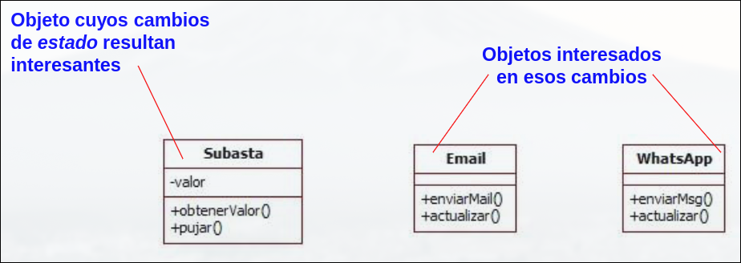
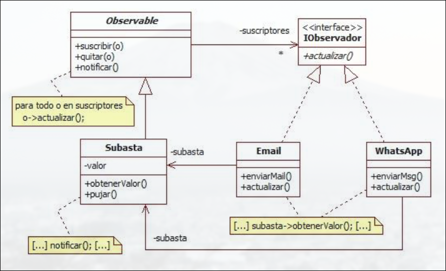
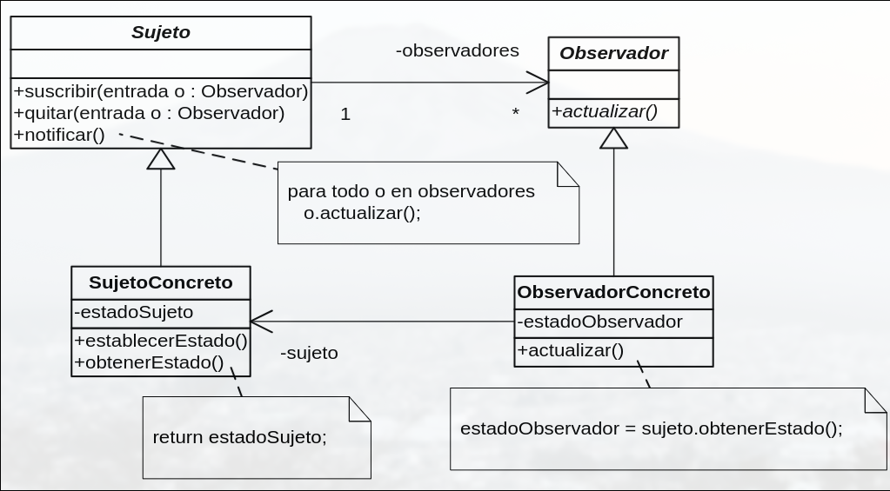
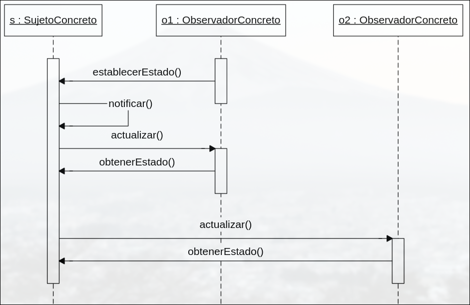
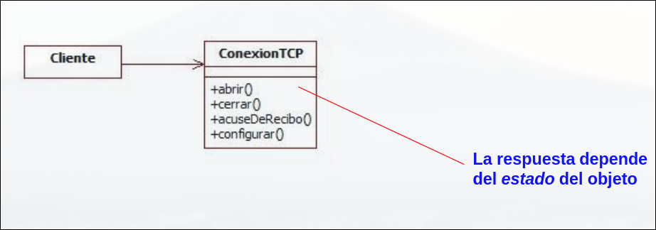
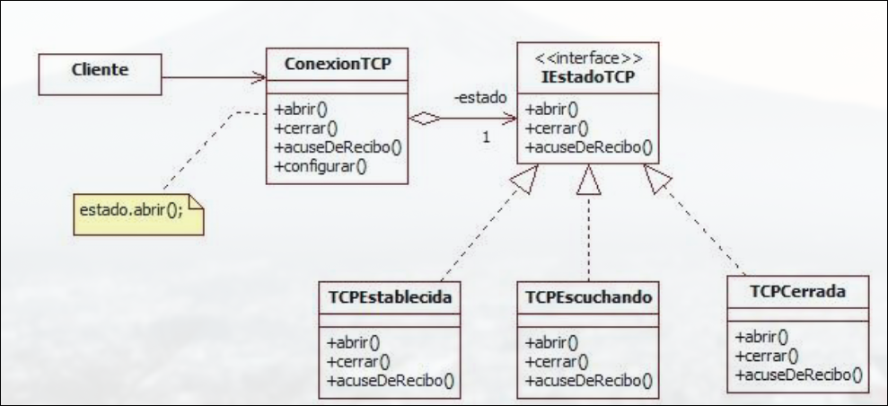

AsignaturaDESOFT
Curso2.º · C2
Tema10 / 10
Patrones de Comportamiento
10.1 Patrón Observer
El cambio de estado en un objeto (sujeto) se notifica a los objetos suscritos a él (observadores), que sincronizan su estado con el del sujeto. Establece una dependencia de uno a muchos entre objetos. Se usa cuando:
- Un cambio en un objeto requiera modificar otros objetos sin que importe cuántos son.
- Un objeto deba ser capaz de hacer notificaciones a otros sin hacer suposiciones sobre quiénes son exactamente.


Participantes
| Participante | Rol |
|---|---|
| Sujeto (Subject) | El objeto que tiene el estado que puede cambiar. Mantiene una lista de observadores y define métodos para añadir, eliminar y notificar observadores. |
| Observador (Observer) | Interfaz que deben implementar los objetos que quieren enterarse de los cambios. Contiene el método actualizar(). |
| SujetoConcreto | Implementación del sujeto, guarda el estado que interesa a los observadores y los notifica cuando cambia. |
| ObservadorConcreto | Implementación del observador. Se registra al sujeto y actualiza su estado cuando recibe una notificación. |
Estructura


## Ventajas e Inconvenientes - **Desacopla el sujeto de los observadores**: pueden evolucionar por separado. - Permite una **arquitectura reactiva**, donde los componentes se actualizan automáticamente. - Fácil de **añadir o quitar observadores** en tiempo de ejecución.- Puede ser difícil de depurar o seguir, ya que los cambios se propagan automáticamente.
- Si hay muchos observadores, puede impactar en el rendimiento.
- El orden en que se notifican no está garantizado (salvo que lo controles explícitamente).
10.2 State
Permite que un objeto modifique su comportamiento cada vez que cambia su estado. Parecerá que cambia la clase de ese objeto. Se usa cuando:
- El comportamiento de un objeto depende de su estado y cambiar en tiempo de ejecución.
- Algunos métodos presentan estructuras condicionales con múltiples ramas formadas por bloques extensos de código.


Participantes
| Participante | Rol |
|---|---|
| Sujeto (Subject) | El objeto que tiene el estado que puede cambiar. Mantiene una lista de observadores y define métodos para añadir, eliminar y notificar observadores. |
| Observador (Observer) | Interfaz que deben implementar los objetos que quieren enterarse de los cambios. Contiene el método actualizar(). |
| SujetoConcreto | Implementación del sujeto, guarda el estado que interesa a los observadores y los notifica cuando cambia. |
| ObservadorConcreto | Implementación del observador. Se registra al sujeto y actualiza su estado cuando recibe una notificación. |